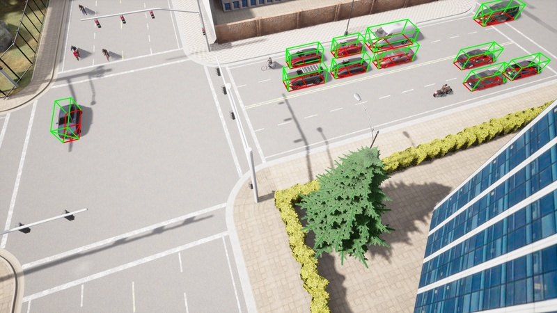
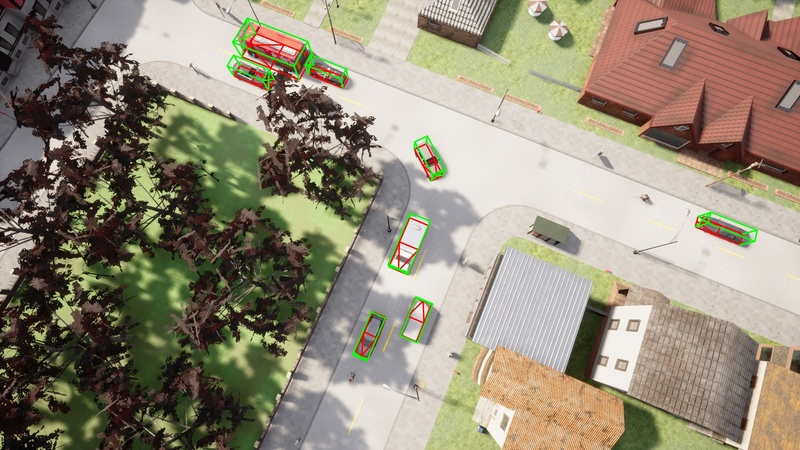
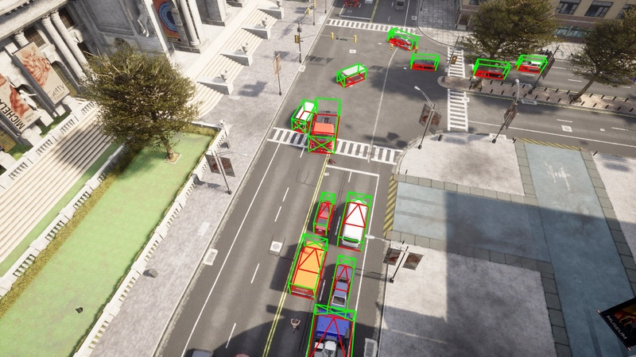
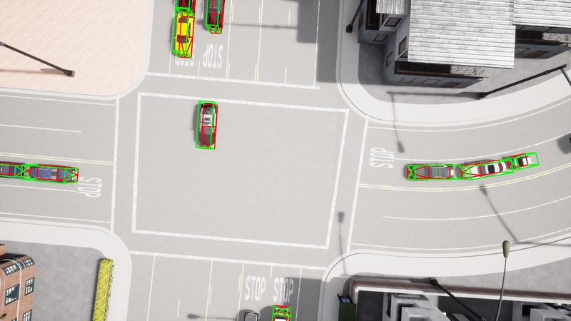
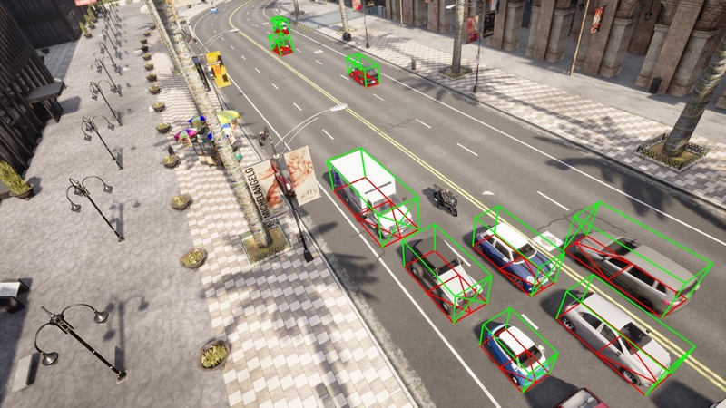
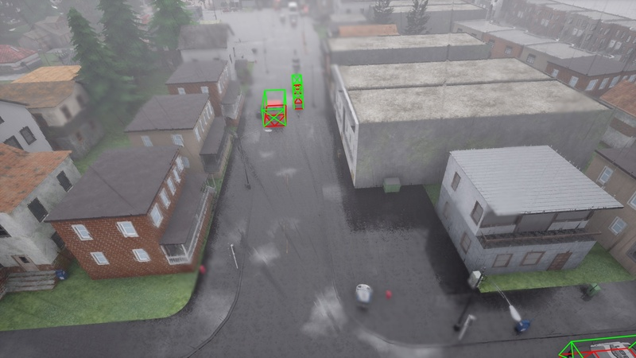

Existing techniques for monocular 3D detection have a serious restriction. They tend to perform well only on a limited set of benchmarks, faring well either on ego-centric car views or on traffic camera views, but rarely on both. To encourage progress, this work advocates for an extended evaluation of 3D detection frameworks across different camera perspectives.
We make two key contributions. First, we introduce the CARLA Drone dataset, CDrone. Simulating drone views, it substantially expands the diversity of camera perspectives in existing benchmarks. Despite its synthetic nature, CDrone represents a real-world challenge. To show this, we confirm that previous techniques struggle to perform well both on CDrone and a real-world in-house 3D drone dataset.
Second, we develop an effective data augmentation pipeline called GroundMix. Its distinguishing element is the use of the ground for creating 3D-consistent augmentation of a training image. GroundMix significantly boosts the detection accuracy of a lightweight one-stage detector. In our expanded evaluation setup, we achieve the average precision on par with or sub-stantially higher than the previous state of the art across all datasets.
CDrone comprises 42 locations across 7 worlds within the Carla simulation environment, encompassing urban and rural landscapes. Each recording is populated with 265 vehicles. With 900 images per location captured at a rate of 12.5 frames per second and a resolution of 1920x1080 pixel, the dataset features a mixture of nighttime, daytime, dawn and rainy scenes. In total, CDrone contains 174,958 cars and 18,556 trucks annotations. It is divided into 24 training (21,600 images), 9 validation (8,100 images) and 9 test locations (8,100 images). To foster future research we also release Track IDs, depth maps as well instance segmentation masks along with 2D and 3D bounding box labels. Annotations are provided in the OMNI3D format, and our standalone evaluation toolkit enables 3D Average Precision evaluation with full support for SO(3) rotations.

@article{meier2024cdrone,
author = {Meier, Johannes and Scalerandi, Luca and Dhaouadi, Oussema and Kaiser, Jacques and Araslanov Nikita and Cremers, Daniel},
title = {CARLA Drone: Monocular 3D Object Detection from a Different Perspective},
journal = {GCPR},
year = {2024},
}